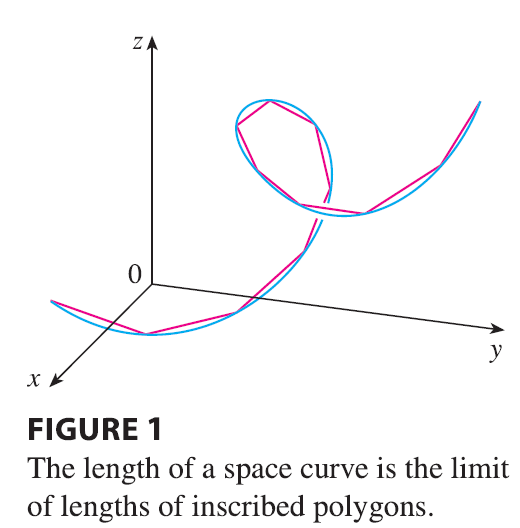

In Section 10.2 we defined the length of a plane curve with parametric equations \(x = f(t)\), \(y = g(t)\), \(a \le t \le b\), as the limit of lengths of inscribed polygons and, for the case where \(f'\) and \(g'\) are continuous, we arrived at the formula
\[ L = \int_a^b \sqrt{[f'(t)]^2 + [g'(t)]^2} dt = \int_a^b \sqrt{\left(\frac{dx}{dt}\right)^2 + \left(\frac{dy}{dt}\right)^2} dt \tag{1} \]

The length of a space curve is defined in exactly the same way (see Figure 1). Suppose that the curve has the vector equation \(\mathbf{r}(t) = \langle f(t), g(t), h(t) \rangle\), \(a \le t \le b\), or, equivalently, the parametric equations \(x = f(t)\), \(y = g(t)\), \(z = h(t)\), where \(f'\), \(g'\), and \(h'\) are continuous. If the curve is traversed exactly once as \(t\) increases from \(a\) to \(b\), then it can be shown that its length is
\[ L = \int_a^b \sqrt{[f'(t)]^2 + [g'(t)]^2 + [h'(t)]^2} dt \tag{2} \]
\[ = \int_a^b \sqrt{\left(\frac{dx}{dt}\right)^2 + \left(\frac{dy}{dt}\right)^2 + \left(\frac{dz}{dt}\right)^2} dt \]
Notice that both of the arc length formulas (1) and (2) can be put into the more compact form
\[ L = \int_a^b |\mathbf{r}'(t)| dt \tag{3} \]
because, for plane curves \(\mathbf{r}(t) = f(t)\mathbf{i} + g(t)\mathbf{j}\), \[ |\mathbf{r}'(t)| = |f'(t)\mathbf{i} + g'(t)\mathbf{j}| = \sqrt{[f'(t)]^2 + [g'(t)]^2} \] and for space curves \(\mathbf{r}(t) = f(t)\mathbf{i} + g(t)\mathbf{j} + h(t)\mathbf{k}\), \[ |\mathbf{r}'(t)| = |f'(t)\mathbf{i} + g'(t)\mathbf{j} + h'(t)\mathbf{k}| = \sqrt{[f'(t)]^2 + [g'(t)]^2 + [h'(t)]^2} \]
EXAMPLE 1 Find the length of the arc of the circular helix with vector equation \(\mathbf{r}(t) = \cos t \mathbf{i} + \sin t \mathbf{j} + t \mathbf{k}\) from the point \((1, 0, 0)\) to the point \((1, 0, 2\pi)\).